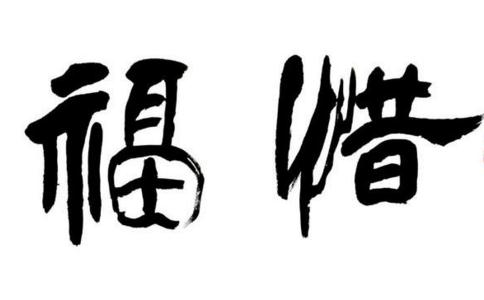

人的福报
前生所造业力所产生的福寿的业果，也会因今生或善或恶的行为的因缘发生变数。如同我们前生往因果银行中存下了存款，我们今生的受用都是在从自己的户头上取款而来。如果今生不仅不行善法，还造作恶业，放纵自己的贪嗔痴而耗损自己的福报，就如同不仅不合理理财、赚取新的
而老人这个群体，因为本身今生的福寿存款已经消耗了大半，由于某种大量损福的事情而引发寿命提前终结的现象就特别明显。比如给老人办寿宴，
在全国很多地方，比如我们南方当地都有这样一种
在我身边就有无数真实的案例验证了这一说法，很神奇，我老家有个百岁老人，身体一直很硬朗，那么大年纪了头脑清晰，思维正常，还能勉强干一些简单的活儿，听长辈说，老人的事迹似乎还被地方台报道过，但是老人一直非常低调，连一百岁都不做，后来一百多岁的时候，村委会终于忍不住了，觉得老人太低调，长寿不是好事吗，为何不庆祝一下？几个村干部就去老人家，提出村里出钱，一定要为老人做寿，全村人为老人办酒席，老人死活不肯，但是村干部非常坚持，必须要为老人做寿，结果老人被迫过了个生日，场面特别热闹，大家都很开心。
最后不到一个月，老人就死了！……
一个没有大善大恶的普通百姓，命里的东西是有定数的，甚至你吃一粒米，喝一口水都是你命里有的。一个风烛残年的老者，本身命中福报就不太多了，如果平时不懂行善积德，那就是活一天消耗一点福报，而大操大办搞酒席，酒席是因老人而办的，那么就是消耗老人命里的福报啊！大家想想，一个百岁老人命中剩下的福报，能承担得起请全村人吃饭吗？而且请全村人吃饭，这要杀多少生！（网友“莲花小饼”分享）
童年时代，家里遭遇一件大事，南老师刻骨铭心，在一定程度上，这件事的教训，融入了他的人生哲学之中。那一年，大约十一岁，父亲送他到县第一小学上学。…… 县小学在城里，没有寄宿，父亲找了城里一个林姓朋友，让南老师借住在他家里。正好这位朋友有一个孩子也在念小学，名叫林梦凡，也是一个独子，两人正好作伴。……
读了半年，放寒假了，就回家过年。过阴历年，农村里都是热热闹闹，一般从初一到十五灯节，走亲访友，大宴宾客。加上这一年正是他祖母的六十大寿，凑在一起，南家更是热闹非凡，天天席开十几桌。父亲在乡里本来人缘不错，加上他刚刚为地方上修了一个陡门，就是蓄水放水的水闸，很得民心，来祝寿的、“蹭饭”的人特别多。这样闹到正月十五，南老师一觉醒来，突然出观一个念头：不行，我要走，不能呆在家里，要上学去。父母亲拦他，学校还没有开学，你去上什么学？南老师执意要走，反正不愿意在家里呆着，到城里找同学去。父母拗不过他，只得让他去。那一天，南老师一个人，步行两三个钟头，住到了同学林梦凡家。第二天上午，父亲派人来，告诉他昨晚家里被抢，并带来一份状纸，叫他到县里报案。
原来，头一天夜里，一伙海盗洗劫了南老师的家。南老师的父亲开了一商店，卖米、卖布、卖杂货，像当时镇上的一般商店一样，前店后屋。海盗来打门撬门的时候，他的父亲被惊醒，知道情况不妙，顾不得老人妻子，光着脚从后门跑了。等海盗撬开门进来时，他母亲在惊恐之中还能急中生智，摘下戒指耳环拱手交给强盗，说：主人都跑掉了，我是他家的佣人。南老师的母亲平素不爱打扮，穿衣服不大讲究。海盗看她这副样子，不像是老板娘，就放过她了，只是把店里能抢走的东西席卷一空。等到他父亲带领一群“盐兵”赶到时，那伙海盗早已扬长而去了。
这是南老师记忆中
几十年后，南老师从这个偶然事件上，引出了一个人生的哲理，他说：如果不大事操办祖母的六十大寿，可能不会招来海盗；所以，在中国传统文化中，不轻言做寿；拿佛学的道理来讲，一个人在“福报”很好的情况下，不要把“福报”都用完了。南老师的意思是：一个人，在有钱、有权、有势的情况下，不要张扬，不要忘乎所以，不要得意忘形。南老师一辈子的为人，都是遵循着这个原则，哪怕在他声名鼎盛的时候，自己都是那么冷静，那么低姿态。（摘自：练性乾所著《我读南怀瑾》）
办80大寿后，奶奶10天后查出晚期癌症，医生说最多还有三个月的命！七月份家人给奶奶办80岁生日，生日过后10天就去医院检查出是卵巢癌晩期的晚期！医生说最多三个月命！阿弥陀佛！（莲友“POR***S” 分享）
寿宴消福：大摆80大寿宴席，杀生、大鱼大肉的，四个月后我爷爷就走了
我爷爷是一个普通的农民、一生清贫，可八十大寿时叔叔伯伯要为他大摆寿宴，杀生、大鱼大肉的，四个月后我爷爷急性肝炎十天就走了，不是巧合，真是消福引起的。我爷爷小时候就苦，到我十七岁那年家里才吃上真正的白
三姐的公公出车祸于前天死了，是被摩托撞的，肇事者撞人后逃逸。可怜了一个七十几岁的农村老人……两个多月前才过完他的七十大寿。本来他对过寿的事情一直抗拒的，可是执拗不过三姐夫的一劝再劝……当初我听三姐说的时候，我说老人家不办寿宴是好事情，我见过听过过完大寿就死的人太多了。
因为人的年纪大了，本来就没剩多少福气了，你再给他杀生害命更折他的福，想想一场宴席下来他要背上几百条命的债，要折掉多少的福气啊，只能让他走得更快！
三姐当时没反驳，因为她也知道几个过完大寿不久就死的人，不信佛的父母（三姐也不信）也马上说村里的某某和某某也是过完寿就死了。
我当初跟她说的时候，只是把我的见闻和
所以，不管是老人小孩甚至是死人，我们如果真为亲人好，千万不要以他们的名义去害他们：小孩的出生酒满月酒（能不办则不办，或者摆素席多好），大人的婚礼（得的是几万元的礼金，失的是几年或十几年的寿命和福气），老人的寿宴（本来福报就剩不多了，别折腾了，孝子就应该摆素席、
我是山东枣庄的，20年前的1994年，我奶奶就是在子女们（我的父母，叔，姑）的提议下过66岁寿宴，之后1个月内去世的。这绝对不是巧合，我们大家引以为戒啊。（莲友“海纳百川”分享）
老人60大寿当天出车祸，后发脑梗、半身瘫痪！亲眼见过六十大寿当天，寿宴已经开始，老人由家属用摩托车送过去，在酒店门口被路边冲出来的狗吓到，倒地骨折，于是寿宴取消。骨折治疗好了，出院前一晚，出现脑梗塞。脑梗塞治疗好了，半身瘫痪。（莲友“ kingko***d” 分享）
爷爷刚刚过完80岁大寿就胃出血住院动手术！记得我爷爷80岁大寿的时候摆酒了，还挺隆重的。 刚过完寿就胃出血住院动手术了，这是99年的事情了，现在我学佛了才明白怎么回事。（莲友“223***6”分享）
本来身体很好的哥哥做完六十大寿莫名其妙住了两个月医院！
我家族一个哥哥也是这样，做完六十大寿莫名其妙住了两个月医院，他之前身体很好。（莲友“哈哈镜***ar”分享）
大德开示：《崇修录》中写道：“人生衣食财禄，皆有定数。若俭约不贪，可得延寿；奢侈过求，受尽则终。譬如有钱一千，日用一百，则可十日，日用五十；便可二十日。若纵恣奢侈，一千之数，一日用尽矣！或难之曰：‘世亦有廉俭而命促，贪侈而寿长者，何故？’曰‘贪侈而寿，当生之数多也。若更廉俭，必愈寿矣！廉俭而促，当生之寿少也。若更贪侈，必愈促矣！’”人的福报有限，寿命有数。如同本来存款是七十年期定存十万，若七十年中只用了五万，则帐户上还有五万，可以再办延期，能节俭用度不贪着，谨慎言行，多行善法，就可以延长寿命；如果奢侈浪费、放纵自己的欲望，有过分的索求和享乐，常行恶法，福报耗尽了，就如七十年十万存款五十年用光，就要提前归零销户一样，寿命也提前走向终结。
益西彭措堪布在讲“念死无常”时就曾开示：“按照《
那么，知道这样的因果道理，我们应该如何孝敬父母、
想让父母长寿，我们可以以他们的名义常行放生之善，
想让父母多福，我们可以以他们的名义代他们供养三宝、助建佛像助印
想让父母无量寿无量福无量财无量安乐，最简单最快捷最方便的方法，就是——我们劝他们念“南无阿弥陀佛”！如彻悟大师所赞：一句阿弥陀佛，是阿伽陀药，无病不疗。是如意珠王，无愿不满。是
愿将本文的功德至心回向给法界所有众生，回向往生西方